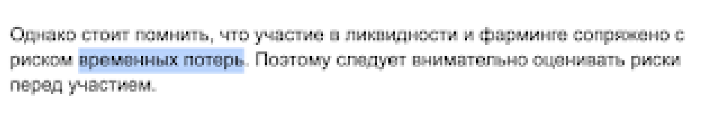
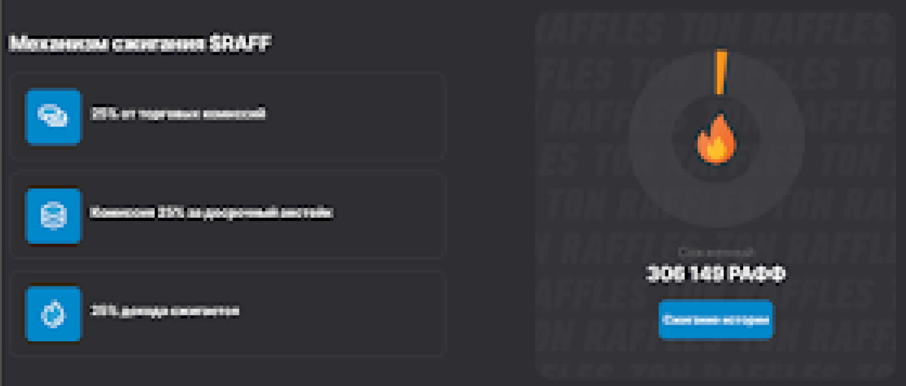

1. Руководство по написанию статей на площадке TON Wiki.
Этот гайд поможет авторам и редакторам сообщества TON Wiki придерживаться единообразия в написании статей и материалов.
Этим гайдом мы хотим сподвигнуть на самопроверку авторов, поэтому собрали основные правила, типовые ошибки при написании статей и кейсы обыгрышей тех или иных особенностей любимой экосистемы TON.
Не стоит обижаться, если в качестве ошибочного применения различных объектов, терминов и т.п. будут использованы скрншоты материалов именно из вашей статьи - все здесь учатся вместе с вами, поэтому только вместе и только общими усилиями мы достигнем упомрочительного результата и сделаем наш славный мир чуточку лучше!
Поехали!
Полезные инструменты
В этом блоке собраны и будут постоянно обновляться полезные ресурсы и иснтрументы для написания вами лучших статей
1.Правила написания статей оригинальной Wikipedia.
Тут вы получите основную базу и уже перед стартом написания собственной статьи априорно сможете избавиться от типовых ошибок.
2. Главред
Обязательно прогоняйте текст через этот сервис, он проверит текст на чистоту и читаемость. Это не панацея, но при наличии малого опыта написания статей - обязательно к использованию.
3. Типограф
Поможет "причесать" уже готовый текст, привести к единообразию кавычки, дефисы/тире и прочие символы. Предварительно необходимо в настройки типографа установить опцию “Выдавать готовые символы”, чтобы типограф не заменял их на кодовые значения.
4. Книга "Пиши-сокращай”
Читается легко, но это один из лучших способов
повысить качество написания собственных текстов, с примерами и историями.А для более продвинутых можно прочесть – “Слово живое и мертвое” Норы Галь.
Основные моменты и наиболее частые ошибки
1) Пишите только факты, без обобщений и додумываний.
Тут упоминаются преимущества, но нет подкрепления фактами. Что за преимущества? Какие проблемы и потребности могут закрыть эти преимущества? Можно ли описать преимущество не называя это преимуществом?
Лучше так: Владельцы токенов $RAFF первыми получают доступ к покупке токенов, которые размещаются на площадке.
2) Используйте машинный перевод с умом.
Тут использовался машинный перевод текста с сайта. Получилось криво – автор не учел, что на сайте повествование ведут авторы проекта и пишут от своего имени. Получилось, что цель проекта – внедрить что-то в свой же проект.
Еще пример – автор не вычитал перевод, отсюда и ошибка в терминологии, так как машина перевела дословно. Правильно – непостоянные потери.
3) Будьте внимательны к прилагательным.

Например, слово “уникальный” – не следует использовать для приукрашивания.“Уникальный”, значит единственный в своем роде. Следовательно, необходимо подтвердить и раскрыть уникальность. Это может быть инновационная механика, киллер-фича, нестандартный подход к реализации и т.п.
Сюда же следует отнести: “популярный”, “легендарный”, “эксклюзивный” и аналогичные прилагательные. Необходимо помнить, что сообщество TON Wiki не ставит целей перед создателямии статей продать или приукрасить – следует описывать только факты.
4) Разбивайте длинные предложения на части.

Предложение получилось громоздким. Чтобы избавиться от этого, достаточно разделить на две отдельные мысли и слегка переформулировать.
Пример:
Для обмена используется АММ (Automated Market Maker). Пользователи могут торговать друг с другом напрямую, без традиционных ордеров с фиксированными ценами.
“Призывают проводить анализ для определения” – такую нагрузку сложно держать в голове, теряется концентрация. Избавляйтесь от таких оборотов и отглагольных существительных, облегчайте посыл.
“Самостоятельный анализ атрибутов” и “определение ценности” – слабые и довольно дешевые конструкции, потому что звучат как абстрактное описание процесса или действия.
Сильный посыл – это когда есть связка глагол + существительное. Либо перефразируйте, либо не используйте вовсе.“Определять ценность” и “анализировать атрибуты” – вот так мощнее.
Не идеальный пример, но все же: “Создатели площадки не советуют полагаться только на значение Rarity, а самим изучать, что делает NFT особенным”
5) Оставляйте важное, убирайте лишнее.

Выделенный текст можно убрать без потери смысла. Не "упарывайтесь" в тонкие детали – от них можно спокойно избавиться, читателю от них не будет пользы.
6) Уважайте имена собственные.

Имена собственные пишите ровно так, как они указаны в официальных источниках: на сайтах, в соцсетях и в публикациях. OpenViewer – не то же самое, что openviewer.
7) Сокращайте максимально, убирайте воду.

Относитесь с подозрением к любым конструкциям, в которых сложно сразу найти ответ на вопрос "Кто что делает?". Предложения можно объединить и сократить, мысль получится лаконичной и хлесткой. "Участники тестируют новые фичи и ищут баги – получают за это награду в криптовалюте и SBT."
8) Объединяйте общие сущности в списках.

Пример выше: в двух блоках есть общие сущности – название мероприятия, дата проведения, механика и призы. Эти сущности можно привести к единому формату и расположить во всех абзацах в одном месте – в начале, например. Так будет удобнее навигировать по тексту.
9) Используйте GPT (и другие нейросети) со всей ответственностью.

Пример выше – классические галлюцинации GPT. Правки таких текстов занимают в разы больше времени, чем авторские. Ужасно мучительно доводить такие статьи до ума. Будьте готовы, что если вы не факт-чекаете материал перед сдачей – итераций правок будет много, и они будут долгими.
10) Убирайте лишние местоимения.

В первом предложении можно сократить не только выделенное местоимение,но еще “у вас” и “вы”. Смысл не меняется – принадлежности очевидны по контексту, так что можно смело удалять.
Вознаграждение
За успешное написание статьи и подтверждение вклада в экосистему TON, каждому автору положена награда в виде денежного вознаграждения и уникального, памятного SBT.
Один автор может получить только один такой SBT. А коллекция доступна по ссылке:
Руководство по подаче заявки на вознаграждение доступно по этой ссылке.